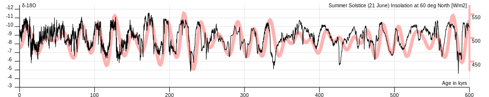
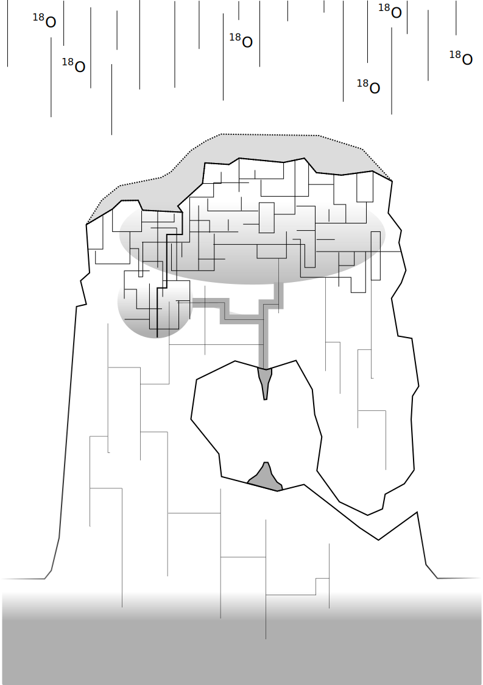
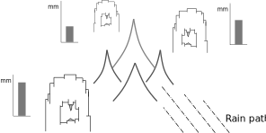

Preamble
This is a top level document describing the motivations, background and goals of my PhD. This is supposed to function as a broad overview using language that can be understood by everyone.
The focus of my research will be rock formations found in caves, such as stalagmites and stalagtites (collectively known as speleothems), and their connection to the asian monsoons. The goal of this document is two part. To first explain, based on the latest research, how the monsoon weather system is connected to the chemical record we find in caves. And then second, to explore how we can expand this cave-monsoon connection to learn more about our past climate.
To keep this short many things are not discussed. So how these records fits within a broader picture of the Earth’s past climate and and how it can help uncover some of geologies unanswered questions is left outside the scope of this document. Details of the study location, references, indepth technical background information on geochemistry and hydrology and the fun jargon that comes with it all - all these things live on separate pages (to be maybe uploaded over time)
Introduction
What are speleothems?
This is a general term for rocks that grow in caves. My primary focus will be on cave stalagmites (the rocks that growing vertically from the cave floor) because they have more a predictable growth and are easier to study when compared to other cave features. I will use the two terms interchangeably.
Why speleothems?
- Relatively Young Field
-
While people have been studying caves for a while, substantive progress has been made in the past decade. My impression so far has been that there are still many unanswered questions, many poorly understood phenomena and plenty of accessible avenues of research.
- Matching Skillset
-
The climate record we can see in caves is unusually "clean" with very small errors - especially when compared to other geological records. This makes it possible to use mathematical tricks to try to infer more than is available at first glance. The hope is that this will allow me to use my past experience in physics/programming to find new ways forward.
- Team Synergy
-
Professor’s Lowemark’s paleoclimate team brings in expertise from a wide variety of different areas - from lake records to arctic deep sea cores. Hopefully my work will be complementary and we can work together, learn from each other and combine our different experiences to find new unexplored areas of research at the boundaries.
What do speleothems tell us?
Speleothems primarily form in caves made of limestone. They form due to water flowing through the limestone in a complicated system called karst - where the water is both carving the rock, creating the caves, and creates new rock, the speleothems.
The main record we find in limestone caves is the 18O atoms we find trapped in the cave’s stalagmites. 18O is a relatively rare form of oxygen which is about 12% heavier than the more common oxygen 16O. It represents about 0.2% of all the oxygen available on Earth. If we look at the water molecules in the oceans we will occassionally see an H2O with a 18O oxygen. Since these water molecule will a bit heavier than the others, they will have more trouble evaporating. Hence compared to the oceans, you will find less 18O in the rain, rivers and polar ice. The heavier water molecules that do manage to evaporate will also be the ones that tend to fall out with the first rains.

When it rains above a limestone cave system all the H2O, both heavy and light, will initially soak into the soil above. Soil is mostly made of decomposing vegitation and the biological activity within is constantly producing CO2 gas. The deeper you go down in the soil the more difficult it is for this CO2 to flow out to the atmosphere above. So as the rain water flows down it comes in contact with CO2 at higher and higher concentrations - and this CO2 will start to dissolve into the water in larger amounts. Once dissolved, part of the CO2 will produces a weak acid H2CO3 (carbonic acid). The now mildly acidic rain water continues to flow down till it reaches the underlying limestone rock below the soil.
When the acidic rain water makes contact with this rock layer it dissolves a small amount of the limestone (mostly calcium-carbonate CaCO3) into calcium bicarbonate Ca(HCO3). This mixture of water, calcium bicarbonate and some remaining dissolved CO2 gas will then continue to slowly flow downward through the limestone (from where it will typically continue down to a river and eventually back to the sea).
If this mixture of water, bicarbonate and CO2 enters an empty space on its way down - and this empty space is connected to the outside air - then the mixture suddenly finds itself in an environment with very little CO2. This will cause the CO2 to start leaving the water immediately - just like when you opened a bottle of soda (but on a much smaller and less dramatic scale). This pretty quickly makes the water stop being acidic and the limestone that was previously dissolved will "undissolve" and start to reform/crystalize on the nearest surface. So at the point where the water enters the cave you will start to immediately form new limestone rock. If this point is on the ceiling of the cave then at that spot you will form a stalatite that grows downward. Once the water reaches the end of the stalagtite it will fall off as a droplet and splash on the floor of the cave where crystals will continue to grow. These crystals on the floor will accumulate over time into a vertically stalagmite tower. The CO2 leaving the water and the limestone recrystalizing all happens within the space of about a minute and once the CO2 is gone the process will stop. So by the time the water has soaked into the floor of the cave the process is completely over. Notice how the water never has to evaporate!
It’s important to look at the cave’s chemistry from the broader picture. All these processes are very slow and in all these chemical reaction there is a lot of water, H2O, and very tiny amounts of dissolved limstone CaCO3 and CO2. So while all the molecules mentioned come with their own oxygens, in the final analysis almost all of the oxygens in the mixture are really coming from the original rain water. Therefore the oxygens that end up growing (as calcium carbonate CaCO3) on the stalagmites are all almost entirely coming from the rain water. So if we look at the 18O that ends up in the speleothems what we can actually see is the 18O that was in ancient rains.
Okay, cool, but what does 18O tell us?
One of the drawbacks of studying speleothems is that connecting the rain’s 18O to climate is challenging.
As previously mentioned, because water with 18O is heavier it will generally rain out earlier than water molecules with 16O. If we compare very large cloud/weather systems (that can transport lots of water) to smaller, more local systems we see two characteristics: They will rain many more times over the course of their lives and they can travel larger distances before they run out water. Because after each rain less and less 18O is left in the clouds, after many rains these larger rain-systems will start to produce some unusually light rains with very little 18O left over. Some of the largest weather systems found in the world are the summer monsoons in Asia. These are continent-scale systems that can travel very large distances before they reach land, often starting from the middle of the Indian Ocean, and by the time they rain out over land they typically have much lower amounts of 18O when compared to more local/regional rains.
When we look at the rains above our caves we generally grouped them as either being part of some local weather, or being part of the monsoon. If we assume local rains doesn’t change much, then as the strength of the monsoon changes over time, the resulting 18O caught in our caves will also change. As the monsoon gets stronger more of the water in the cave is "monsoon water" and the amount of 18O will drop. And as the monsoon weakens more of the water in the cave is "local water" and the fraction of 18O will increase.
Assuming a stable unchanging local rain system seems a bit risky, however, the overall method of using 18O as a metric for monsoon strength has been confirmed through other climate records (ex: lake sediments) - and 18O based monsoon records have been used successfully in other regions outside of Asia as well. However it is an assumption that one has to bare in mind

Most people agree on this 18O-monsoon connection, but there are exceptions. see:
Oxygen isotopes from Chinese caves: records not of monsoon rainfall but of circulation regime
by B. Maher & Roy Thompson
2012, Environmental Science, Journal of Quaternary Science
What advantages do these speleothems have?
While we’ve established there is a monsoon record in our caves, a record on its own is not very useful if the same information can be obtained elsewhere. However these 18O records has some very unique advantages that set them apart. I highlight these here because I feel it’s important to keep these advantages in mind. This is where new inferances can be made - ones that wouldn’t have been possible from other climate records.
- High resolution 18O
-
As we saw previously, almost every molecule of the limestone has an oxygen (CaCO3) so measuring oxygen in never a problem. And while the rain does have less 18O than the oceans, it’s still present in sufficient concentrations that even with a very small amount of limestone we can measured its concentration to with a very high accuracy. As a result there is very little data noise to worry about. There are also very few processes which can change this 18O concentration between the time it rains and the time the stalagmite forms.
- Accurate time keeping
-
The date of each layer in a stalgmite is determines using Uranium-Thorium dating. Small amounts of uranium are present in limestone and it will dissolve (in very small amounts) into the rain water that flows through the rock. If the rain water forms a stalagmite then some of it will also get trapped in the stalagmite crystal. Uranium is radioactive and so it will eventually decay into Thorium. However Thorium, unlike Uranium, can not dissolve in water at all. This means that we can know for certain that a freshly formed stalagtite crystal has no trace of Thorium. Any Thorium you find subsequently must have formed over time from the decay of Uranium. The ratio of Thorium to Uranium naturally increases over time and it can very accurately tell you the time when the rock containing our 18O actually formed. (somtimes this can go wrong though)
- Finding climate drivers
-
Accurate time keeping turns out to be particularly important when looking at past climate. A lot of changes in the Earth’s climate as quite sudden and many things in the Earth’s climate can shift over the course of a very short amount of time. It can be critical to know which things shifted first and which shifted later. Sometimes this allows us to infer that an earlier event caused a later event and at othe times it just leaves us with more questions to explore. For instance careful measurements have shown that CO2 levels will increase sharply just a couple thousand years before the collapse of the glaciers. This goes against our previous intuition about the carbon cycle and gives researches an important phenomena to try to explain. With Uranium Thorium dating being one of the best dating methods we have available the stalagmite record gives us a unique window into these hard climate-response questions.
- Several important geologic time scales
-
The Uranium-Thorium dating method allows us to calculate ages going back about 600k years. This creates a high-accuracy bridge between recent deglacial climate records, which are abundant, and past glacial/interglacial periods about which we understand much less. One can build and test climate theories on the more recent data-rich time periods and then re-apply those theories on to periods where we have much less information.
The main drawbacks are that the stalagmite doesn’t easily yield any other signal other than 18O, and as it’s been illustrated, the connection between 18O and the climate is for the moment limited to looking at monsoons.
Research
Going forward we need to try to develop other climate records from the caves so that we can say more about the changes we are seeing
Using differences in stalagmite flow paths
The path of the rain water to the cave is actually a more complicated process than previously described. The water is flowing down many different small channels in the limestone, and the flow through these channels will often change depending on how much rain water is coming from above. The added pressure from large amounts can also produce a "piston effect" which pushes exponentially more water into the cave.
Previous research has shown that as water builds up during a long rain it will often find new channels to flow down into the cave. Just like when you fill your hands with water, as the water level rises it finds new gaps between your fingers to go through. This can lead to a stalagmite which has little flow and growth when rains are small, but once the rains pass some threshold level, a new channel is reached and there is a drastic increase in the flow/growth. Or you can have the opposite situation, where past a certain point the water finds some other way down - past the stalagmite - and the flow rate stops increasing.

The net result is that each stalagmite in a cave has a fingerprint of sorts with its own set of flow paths - each stalagmite will respond slightly differently to changes in the rain. If we were to look at several stalagmites in one cave (each with their own rain response) we could start to infer more about the rains and monsoons above. For instance when we see in the record that the summer monsoon increased - what does "increased" actually means? Did the monsoon season last longer each year? Or have the rains gotten heavier? Comparing stalagmites that are sensitive to big rains to those that are not would answer these types of questions.
Comparing different stalagmites would allow us to move from a one dimensional view of 18O to something more nuanced.
Using rain shadows to infer spatial information
If we don’t limit ourselves to just one cave and we look at a slightly larger scale, we can start to compare caves in a particular area. As long as the caves are near each other they will all be under the influence of the same monsoons and local weather systems.
If we were to carefully select nearby caves that were separated by some small mountains then while the local climate would be the same everywhere, the different caves could end up recieving different amount of rain due to the mountains' rain shadow. Hence the record of 18O will differ a bit from cave to cave. The rain shadow ensures that, all else being equal, rains coming towards a cave from the direction of a mountain will produce less rain than ones coming from any other direction.

If one could find several closely situated caves with suitable stalagmites in a similar configuration then one could use the biases and small differences in the 18O record in each of these caves to start talking spatially about the changes in the local monsoons. One could in theory start to say which direction the monsoon had increased/decreased from and if the direction of the monsoon had changed (Note this mathematically requires a nonelinear response to the rain amount in each cave. Fortunately the piston effect is exponential). If this could be replicated over a whole region then one could start to reconstruct the dynamic of the whole monsoon system.
Naturally if this could be done in cojunction with the flow-path analysis from the previous section, then one could in theory recreate a very detailed understanding of the regional climate over the last hundreds of thousands of years. One that goes far beyond the one dimensional anaylsis that’s been possible so far.
Nearby caves have been compared before to see changes in the amount of local rain
Hu, C., Henderson, G. M., Huang, J. H., Xie, S. C., Johnson, K. R. (2008). Quantification of Holocene Asian monsoon rainfall from spatially separated cave records. Earth and Planetary Science Letters, 266, 221-232.
However it doesn’t seem that anyone has yet tried to deduce a direction.
Conclusion
I think the two-part project is ambitious but at the same time not unreasonable. Both ideas of course present some risks;
-
The stalagmite rain response fingerprinting requires having a good mathematical model for the rain flow that is corroborated by the measurements that we get from the cave. If the dripping in the cave doesn’t respond to the rain in a way we can explain then it’s hard to make any useful conclusions
-
The multicave spatial measurements require having equipment in multiple locations which present some technical challenges
-
In both sub-projects one has to worry about actually finding suitable locations/stalagmites and one has to hope the stalagmite records overlap in time.
And of course there will be many other unknown unknowns along the way. However even though the two pieces complement each other to build a more complete picture of the past monsoons they still present independent results. Each part can be done in parallel and is not contingent on the other producing a valid result.
Of course the largest risk of all is the perpetual problem of COVID..
Side Projects
Here I list some potential side projects that are at the back of my mind
Insolation driver
The monsoons have been shown to be very sensitive to changes in the Earth’s Orbit. They seem to very closely follow the amount of sunlight recieve at the 65° latitude.
However as is apparant there is a bit of a "lag" in the response. It’s an open question if this is some delay in the climate system (the oceans need time to warm up?) or if it’s actually responding to a change in sunlight during late summer. Both possibilities has their supporting theories, and while both alternatives give a signal that looks quite similar they are actually mathematically distinct. Using the latest monsoon records it might be possible to distinguish which mechanism is at play
This project probably requires a bit of external consolation b/c it’s quite "mathy" and outside out normal comfort zone
Looking at the Carbon in the sepeleothems
Another element to potentially look at is 13C. This is a rarer form of carbon (~ 1%) that is found in both rocks as well as the CO2 in the atmosphere. Plants that form the soil generally prefer to not take up this form of carbon from the air - so the CO2 in the soil is 13C poor relative to the carbon that is in the limestone. The longer the acidic bicarbonate water sits in the limestone the more it will exchange its carbon with the surrounding rock - leading to "rock aging". This carbon will also then get deposited in the stalagmite.
In theory this could provide us with a way to measure how long the rain sat in the rock before it reaches the cave - and one could observe that change over time. Presumably if it rains more, and the water pressure is higher, then the water will flow through the rock quicker and it will pick up less 13C from the limestone.
This is an area that has had very little research done. Maybe there is a good reason, but I haven’t found one
This project needs more literature review.. and maybe some advice from a hydrogeologist/geochemist
One of the ladies teaching at the paleocamp seems to do stuff related to this: https://sites.uci.edu/johnsonlab/publications-2/
Noronha, A. L.*, Johnson, K. R., Southon, J. R., Hu, C., Ruan, J., McCabe-Glynn, S. (2015). Radiocarbon evidence for decomposition of aged organic matter in the vadose zone as the main source of speleothem carbon. Quaternary Science Reviews, 127, 37-47.
Noronha, A. L.*, Johnson, K. R., Hu, C., Ruan, J., Southon, J., Ferguson, J. E. (2014). Assessing influences on speleothem dead carbon variability over the Holocene: implications for speleothem-based radiocarbon calibration. Earth and Planetary Science Letters, 394, 20-29.
Griffiths, M. L., Fohlmeister, J., Drysdale, R. N., Hua, Q., Johnson, K. R., Hellstrom, J. C., Gagan, M., Zhao, J. (2012). Hydrological control of the dead carbon fraction in a Holocene tropical speleothem. Quaternary Geochronology, 14, 81-93.
Hu, C. Y., Henderson, G. M., Huang, J. H., Chen, Z. H., Johnson, K. R. (2008). Report of a three-year monitoring programme at Heshang Cave, Central China. International Journal of Speleology, 37(3), 143-151.
Rain amount through stalagmite thickness
One quite obvious record to potentially explore is to look at the stalagmite thickness. The more water flows through the soil, rock and cave, the faster the stalagmite will grow. If one could somehow measure the growth rate .. then this could act as a measure of "rain amount" above the cave site.
Here there are basically three not entirely independent methods:
-
Since rain is generally seasonal, each year ends up building up a faintly visible band on the stalagmite. If one could reliably extract the bands (using computer vision) then one could not only count the layers like tree rings, but one could estimate their thickness and observe changes in the amount of annual rain
-
The actual shape of the layers also reflects the amount of water than dropped on the stalagmite - as has been demonstrated in simulation. When there is more water the layer is not only thicker but it also becomes elongated. By looking at how the layers fold on each other one could also build another metric for the amount of water that dripped on the stalagmite
-
If the layers could be reliably segmented then one could then set up a computer controlled mill to cut away each layer one at a time for sampling. Layers could be of arbitrary thickness and the resulting sample size would be significantly bigger than the current dental drilling hole-punch method used. Furthermore the data point would be much better localized as the dental drill method inevitably extracts and mixes multiple layers.
I think these projects are interesting b/c they could corroborate the flow-path work. However there are some potential issues:
I suspect the result will be not of the same accuracy as the 18O record
I think this could potentially be a "rabbit hole" and take much longer than anticipated
I would only move forward on this if I came across some existing suitable algorithms that did most of the work
Trace elements
While we only really look at 18O there are actually other elements being trapped in the limestone. These impurities also change over time and may reflect changes in the above-ground environment (though finding some general trends is a bit difficult).
-
These impurities are what give the different colors to the rock and are what can lead to visible layering
-
These impurities could maybe be measured through methods like Xray florenscence, or Raman spectroscopy
-
The impurities lead to notibly different crystal growth structure. This is also what makes some of the layers look visibly different. These two may be identifiable through computer vision or other methods
This project is a bit too geochemistry for me.. I think it’s an interesting area to look into but it’d require a big investment of time to appreciate better - and I’m not really sure if the final result would be interesting because it’s unclear if the trace elements would even tell you anything clearly